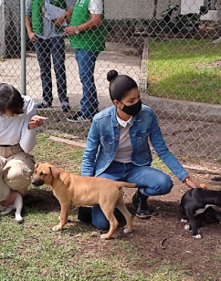
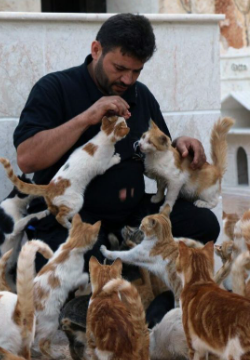
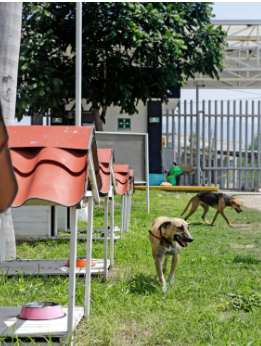

Buena Suerte 245, Ampliación los Olivos, Las Arboledas, Tláhuac, 13219 Ciudad de México, CDMX
Tel: +52 55 2738 4910

Av.Las Torres Col.Lomas de San Lorenzo
Iztapalapa 09780, CDMX.
Tel: +52 55 7463 1739

San Rafael Atlixco 15-239, La Estación, Tláhuac, 13319 Ciudad de México, CDMX
Tel: +52 55 8803 6952